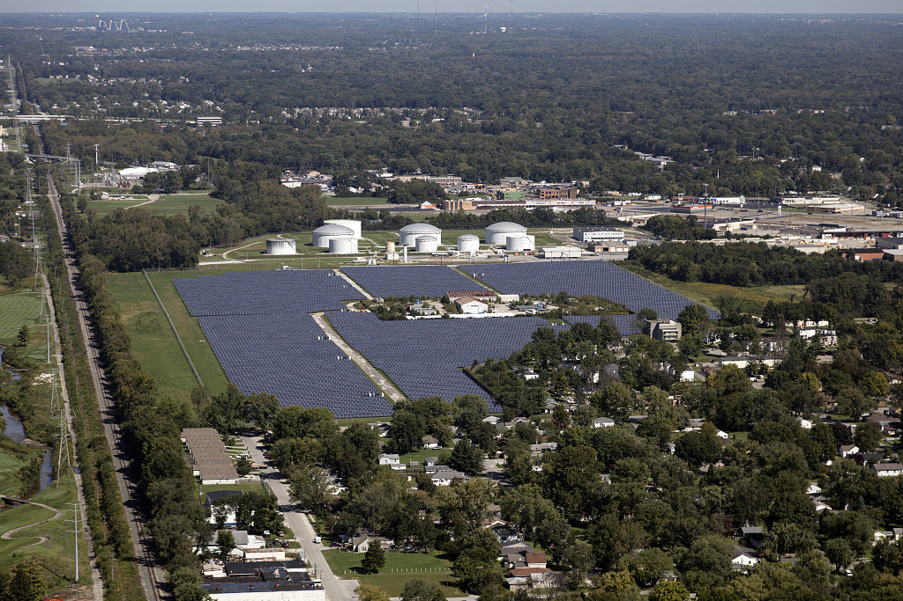

Clients and capital
CountedNew clients, business starts and capital accessed, documented for every program the incubator reports to.

The Business Support Incubator already brings Pine Bluff’s small businesses, lenders and counselors under one roof. We’d like it to be the home base for getting county firms ready for Entergy’s two new plants in Jefferson County: Arkansas Cypress and Jefferson Power Station.
The pieces are already in this building. A $1.6 billion build in the same county gives them a reason to work as one.
UAPB ERDC site; Division of Agriculture (Sept 2026); Deltaplex News (2026); APSC Order No. 4, Docket 25-054-U.
The building already gathers the right people. The build gives them a shared target.
Four roles for the incubator and its partners, each one something they already do.
The room at 615 S. Main for vendor workshops and one-on-ones.
The Pine Bluff Black Chamber and The Generator co-host; the APEX Accelerator brings counselors.
Recruits the firms and runs the session on Entergy’s supplier registration and safety prequalification.
Business plans and loan packaging, so firms can carry the insurance, bonding and payroll a contract needs.
A capital-readiness consultant from the Arkansas Small Business and Technology Development Center.
Flags each firm’s gap on its readiness record and books the right help.
A place for county kitchens to plan for the crew meal program.
Help with health permits and scaling, from the Division of Agriculture’s food program and shared kitchens such as Share Grounds in Rison.
Runs the meal program and spreads orders across county kitchens.
Co-publishes the monthly count as an independent check.
—
Collects the numbers, with each firm’s consent.
Paid roles for UAPB business students, doing the work that keeps the partnership honest.
Agree on a date, the room and who’s invited. A one-page consent form so firms choose what’s shared.
What’s settledA date and the hosts
Registration with Entergy, safety prequalification and government readiness, with counselors in the room.
What’s countedFirms attending; registrations started
Capital readiness and kitchen planning for the firms that want it. Two fellows start on readiness records.
What’s countedFirms counseled; records started
What worked, and whether to make the incubator the standing home before civil construction starts.
What’s decidedContinue, change or stop
New clients, business starts and capital accessed, documented for every program the incubator reports to.
A small-business and supplier piece next to Entergy’s scholarships and internships for HBCU students.
Fellows doing client work on a $1.6 billion build in their own county.
Downtown Pine Bluff, where the county gets ready for the build.
Stedmon Harper · harper@face.works
We’re the Monson family. Our family holds land in the Arkansas Cypress project in Jefferson County, and my mother, Reneta Harper, worked 30 years at Entergy Arkansas. That interest is separate from this work, and nothing here touches our lease.
Delta Futurism is how we’re putting what we know to work, with Facework, my firm, running the day-to-day. I’m Stedmon Harper. We don’t speak for other landowners or the wider community.